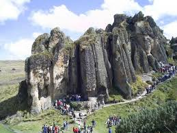

Mira nuestras maravillas
BAÑOS DEL INCA
Baños del inca es conciderada la primera maravilla del Perú y no es para menos ya que con tan solo llegar se siente ese calor del hermoso volcan de los perolitos

CUMBEMAYO
Se encuentran alrededor de 20 km. de la ciudad y 3500 metros de altura. Los Frailones es un bosque de rocas pétreas que dan la impresión de personas en procesión..
HACIENDA LA COLPA
Está situado a 11km. de la Plaza de Armas de Cajamarca. Se crían vacas lecheras que se acercan rápidamente cuando los visitantes las llaman por su nombre..

OTUZCO
Se encuentra a 8km. de la ciudad de cajamarca. Las Ventanillas de Otuzco son uno de los ejemplos más maravillosos de necrópolis prehispánicas peruanass, por eso debes de visitarla si o si
SANTA POLONIA
Es el Mirador que predomina en toda la ciudad. Se puede acceder por las trescientas escaleras. No obstante, al llegar todo el cansancio queda recompensado por la maravillosa vista .
PORCON
Huambocancha está a 8km.y Porcón Bajo está a 14km. de Cajamarca. Se enecuentran cementarios pintorescos que tienen como peculiaridad, lápidas en piedra similares a iglesias coloridas.